Problem
Many users struggle to understand environmental disasters because learning materials are often theoretical and lack visualization. This reduces engagement and real-world understanding.
Solution
Design an interactive AR-based learning application that allows users to explore environmental disasters through real-time 3D simulations, comparisons, and guided educational content.
Project Overview
This AR system presents three main modules related to environmental disasters on the home screen. After following the guide, users scan markers to reveal immersive 3D environment models.
Within the AR scene, users can interact with simulations such as rain, deforestation, and human activity levels. Educational hotspots provide detailed insights, while "Before" and "After" modes allow for clear environmental impact comparisons. The application also offers solution-based choices and concludes with a concise summary of the learning points.
User Flow
- 1 Onboarding & Selection: User opens the app and selects one of six disaster categories.
- 2 Context Setting: User reads a brief explanation of the selected disaster.
- 3 AR Immersion: User taps "View Simulation" and scans a marker to display a 3D disaster model.
- 4 Interactive Exploration: User explores causes, Before & After comparisons, and prevention methods.
- 5 Engagement & Assessment: Completes AR materials (50% progress) → Takes a quiz to reach 100%.
Screen Design
The user interface is designed with a focus on clarity and ease of use in augmented reality environments. Below is the complete visual design of all screens, showcasing the core flows and interactive elements.
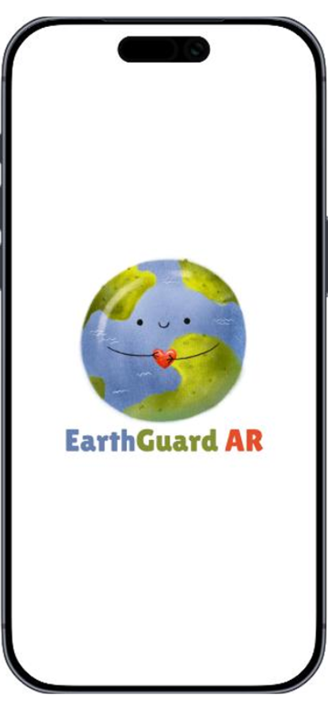
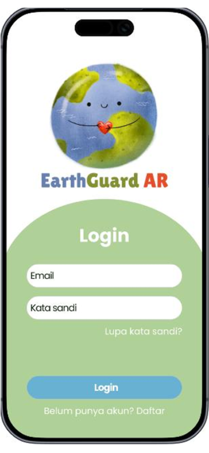
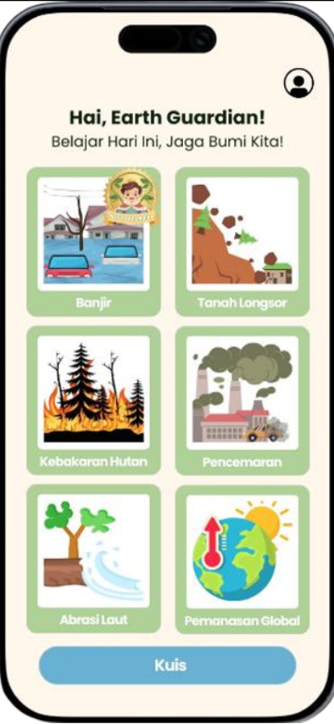
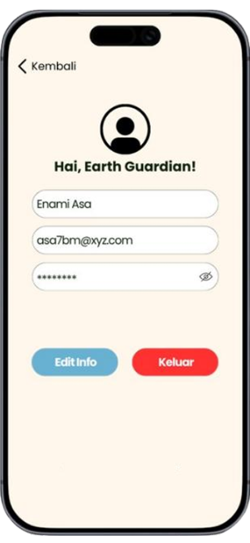
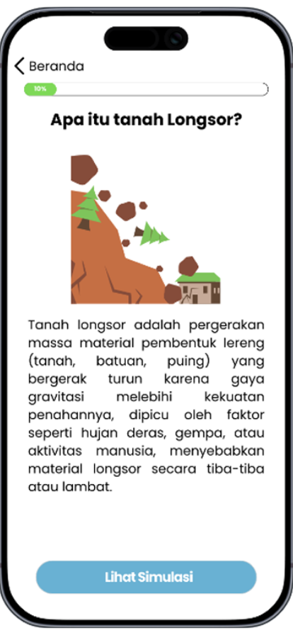
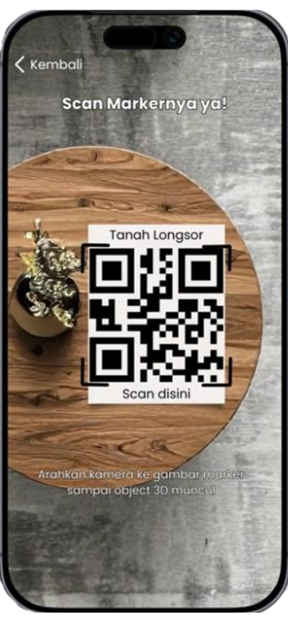
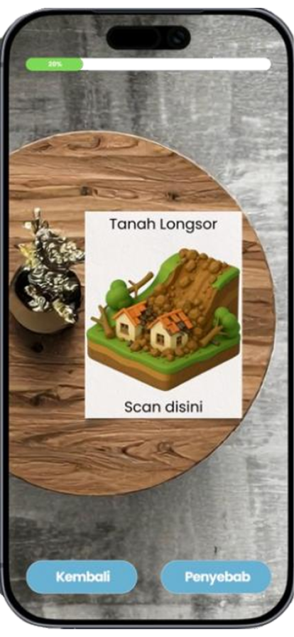
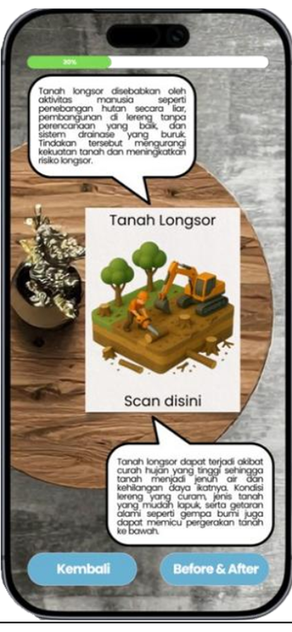
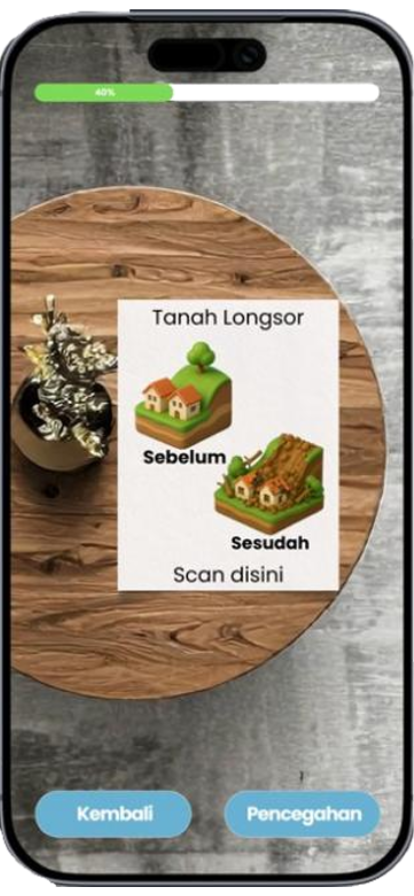
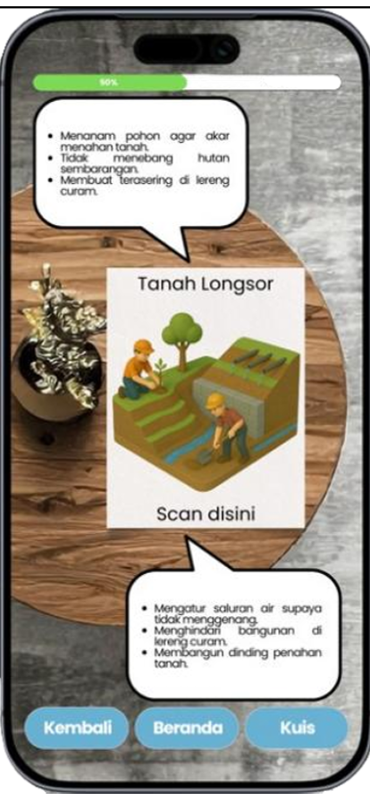
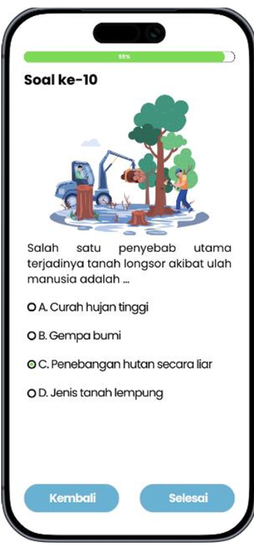
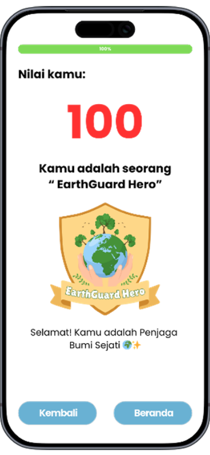
Key Interaction Design
Tap
Select buttons and HUD elements
Pinch
Zoom in/out to see details
Drag
Rotate or move the 3D model
*Simple touch interaction was chosen to ensure familiarity and ease of use on mobile devices.
Core Features
Interactive 3D AR Simulations
Explorable 3D models of environmental disasters (flood, forest fire, drought) that users can interact with in real-time AR.
Educational Hotspots
Context-aware labels and interactive points within the 3D space that provide data-driven insights and facts about each disaster.
Before-After Comparison
A sliding transition feature that allows users to see the transformation of a landscape from pristine to disaster-struck with a single gesture.
Solution-Based Learning
Interactive quests that guide users through potential solutions and preventive measures for each environmental challenge.
Quiz-Based Evaluation
Integrated assessment system to test user knowledge and confirm learning outcomes after completing AR sessions.
Progress Tracking
Visual indicators to monitor learning milestones, encouraging users to complete all disaster modules.